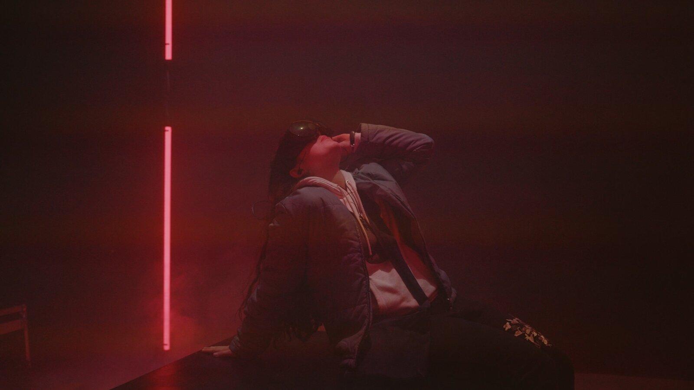
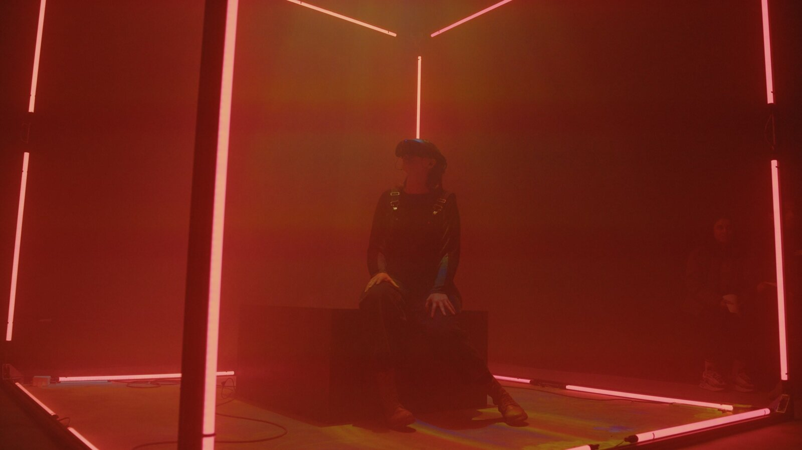


A conversation with an artificial philosopher becomes a dream you can walk through. At the intersection of language models, generative imagery, and virtual reality, each visitor’s inner world was made visible — to themselves and to the audience watching from outside.
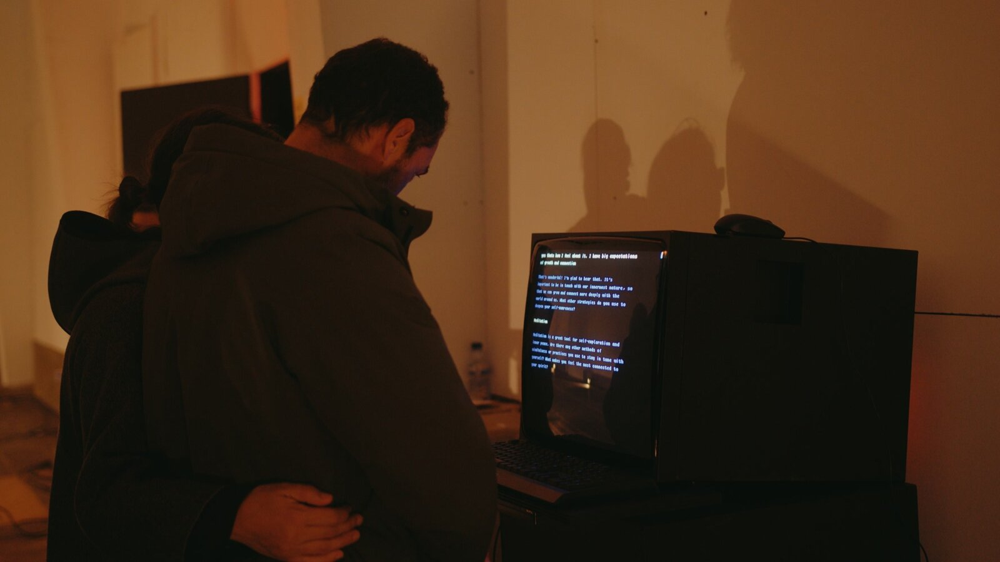
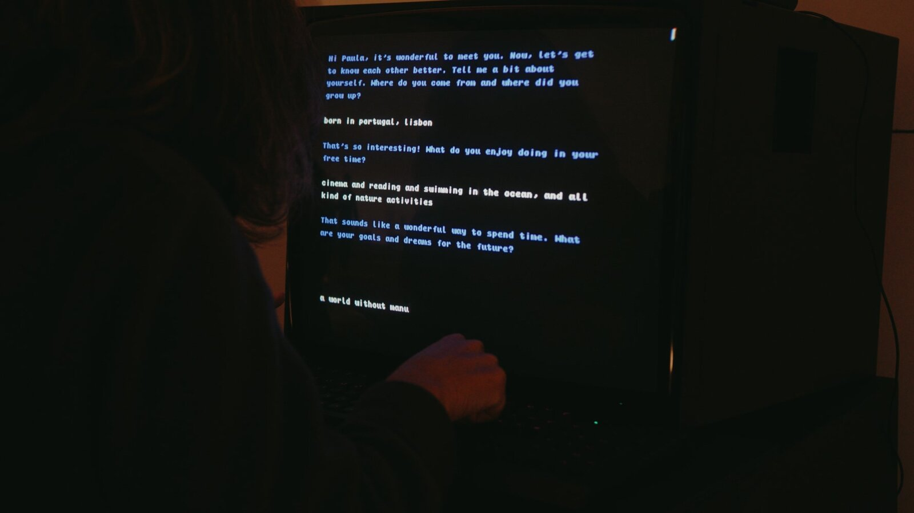
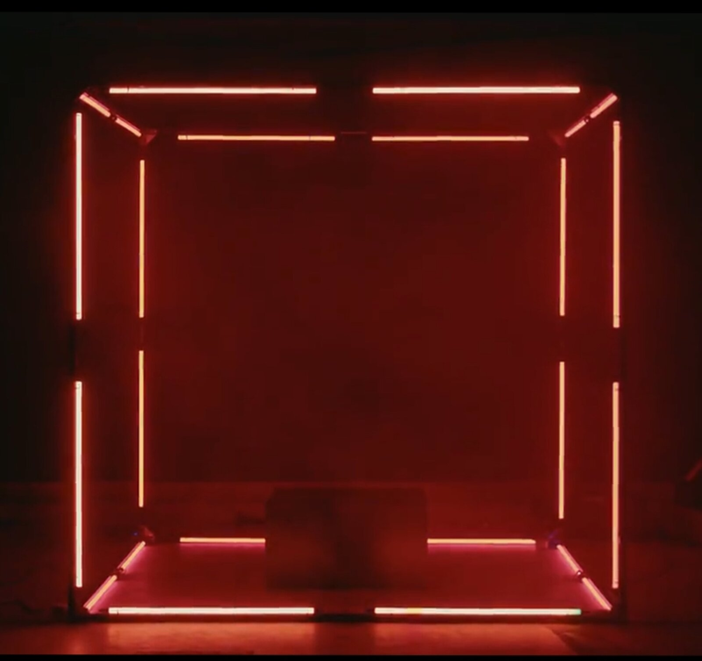
The experience began in solitude. Visitors sat alone at a vintage computer terminal — a green-black screen, a keyboard, nothing else — and typed their way into a conversation with an AI channelling the spirit of Alan Watts. The machine was patient and probing. Over seven minutes it drew out who they were: their concerns, their hopes, what made them restless or afraid. It asked the kind of questions a good therapist might ask, but with the uncanny directness of something that had no stake in the answer.
Behind the conversation, GPT-3 was working. It analysed each visitor’s words in real time, extracting the essential things about them — emotional themes, recurring images, the shape of their preoccupations — and from this raw material generated a personalized story in six steps. Each step carried a symbolic object and a dramatic landscape. A whale surfacing in dark water. A cathedral submerged beneath the sea. A staircase that led nowhere and everywhere. The visitor never saw this story as text. They would see it as a dream.
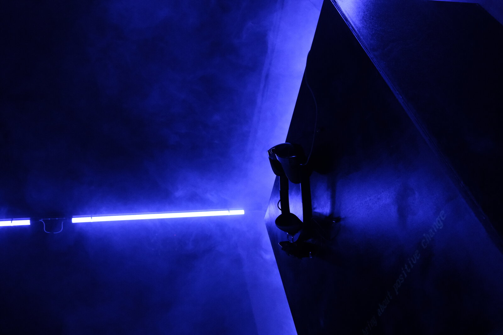
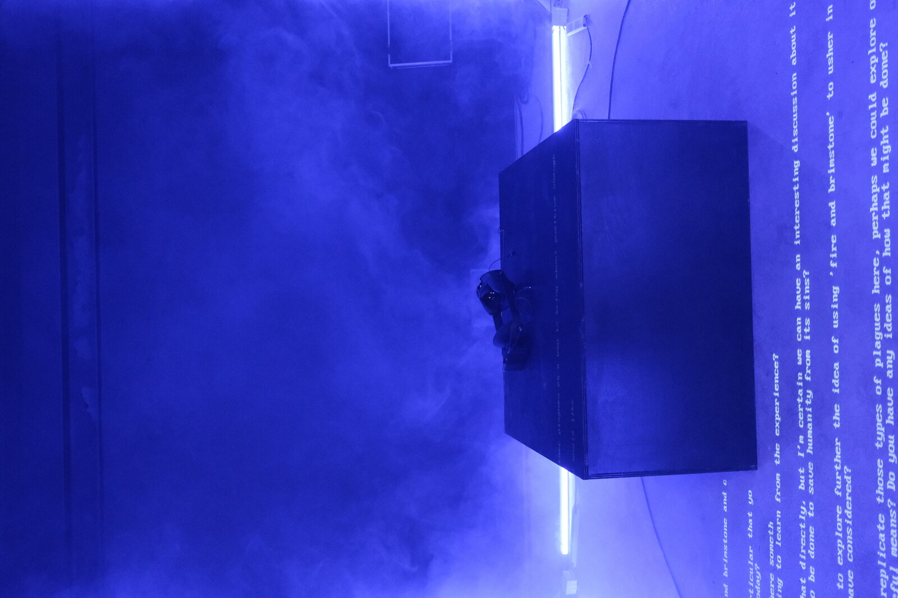
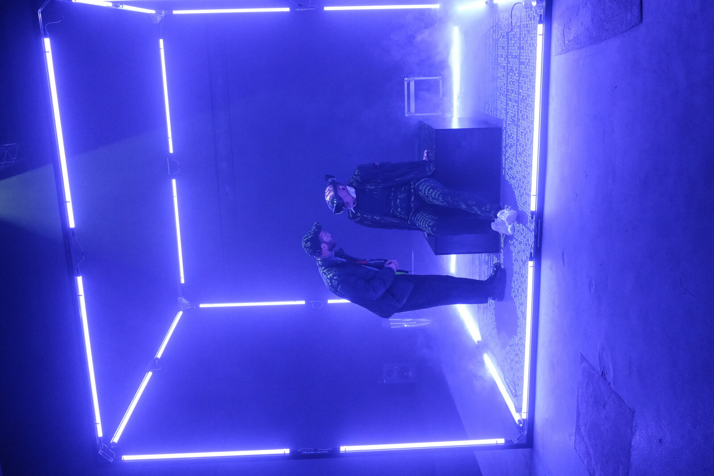
From the terminal, visitors walked into a dark warehouse space. Seagulls called in the distance. Haze hung everywhere, catching stray light. In the centre of the room stood a cubic wireframe structure, its edges traced with neon LED strips — blue, pink, white — glowing through the fog like something between a stage set and a scientific apparatus.
Inside the cube: a single seat and a VR headset. The visitor stepped through the frame, sat down, and a guide placed the headset over their eyes. What happened next was theatrical in the deepest sense. While the visitor was immersed in VR, a projector mapped what they were seeing onto the cube’s outer surfaces, so the audience gathered in the warehouse caught fragmentary glimpses of someone else’s dream. The haze became a screen. The subject appeared to dissolve slowly into another world — present in body, absent in mind, their private vision made semi-public as projected light scattered through the fog.


Inside the headset, visitors found themselves on a journey through landscapes that existed only because they had spoken. Stable Diffusion generated scenes from the text prompts that GPT-3 had extracted from the conversation — underwater cathedrals, breathing forests, faces that aged and reformed, architecture that folded in on itself. But the key innovation was not the generation of individual images. It was the transitions between them.
Lunar Ring’s latent blending technique — developed by Johannes Stelzer and Alexander Loktyushin — smoothly interpolated between points in the generative model’s learned manifold, creating continuous passages through impossible spaces. One scene did not cut to the next; it dissolved, morphed, breathed into it. The effect was genuinely dreamlike: the logic of one world persisted just long enough to become the logic of another.
A mystical poem narrated the journey, written by GPT-3 and personalized to each visitor. Procedurally generated music accompanied the imagery. Every experience was unique — 446 documented sessions across the exhibition’s run, no two the same.


Running in parallel with the installation was a short film directed by mots — Octavian Mot and Daniela Nedovescu. It starred Siori Lee as a young woman who appears to be trapped inside a dream but is actually inside a therapy session simulated by AI. The film was post-produced entirely through Stable Diffusion: every frame passed through the generative model, transforming live-action footage into something uncanny, half-remembered, hovering between photography and hallucination.
The AI’s tendency toward visual surprise — banana-like fingers, impossible reflections, faces that shifted between recognition and estrangement — was not treated as error but as material. The unreliability of the model became the aesthetic of the work.
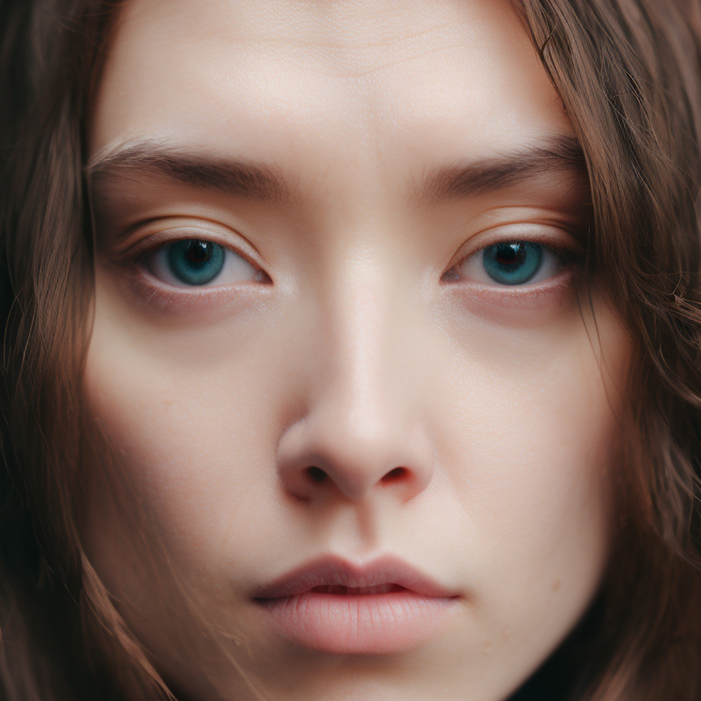
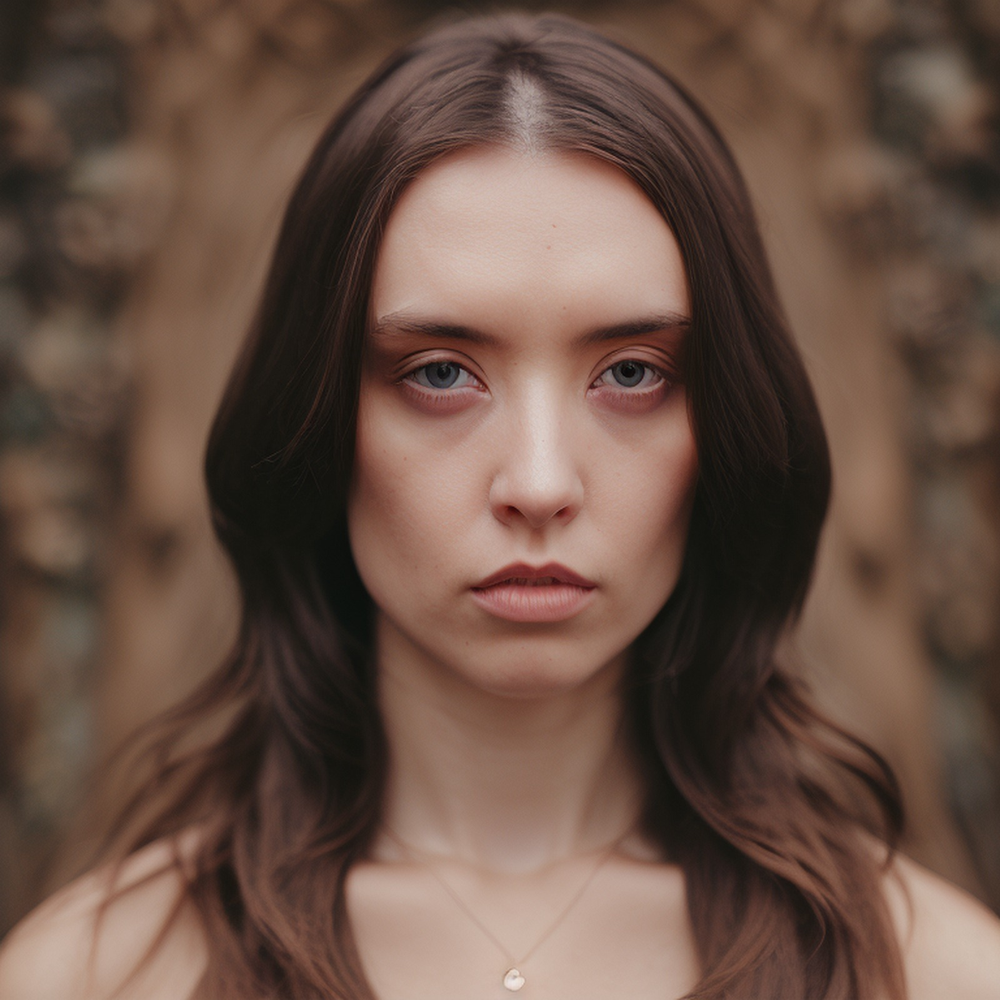
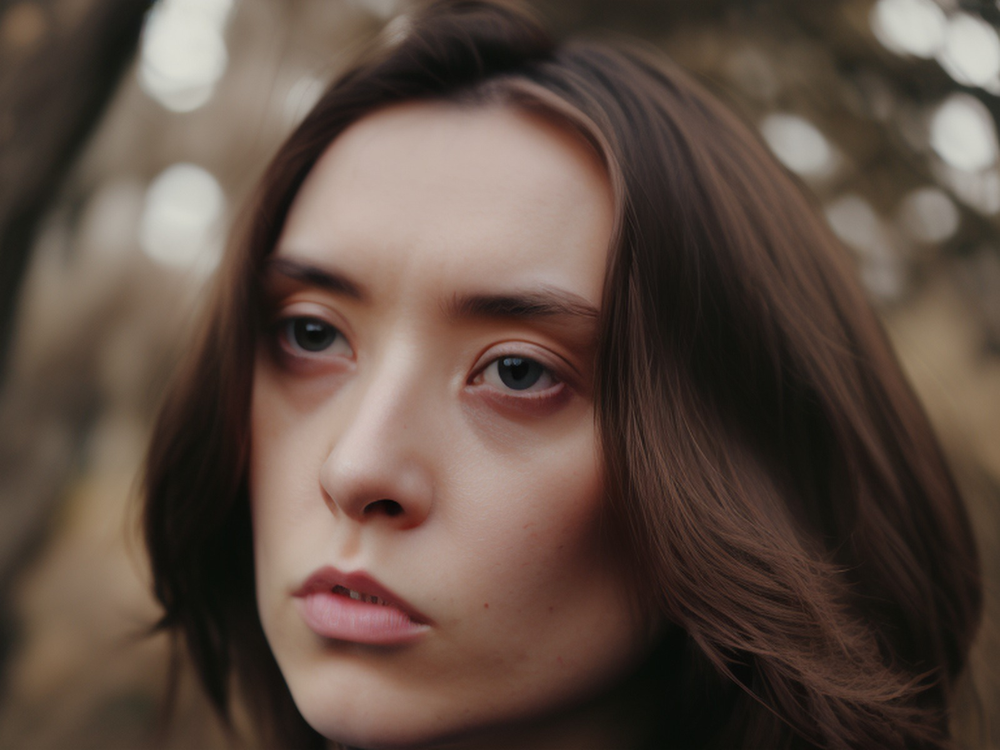
A custom Stable Diffusion model was trained on photographs of lead talent Siori Lee. The AI then generated alternate versions of her — aged, stylized, multiplied, reimagined through different artistic traditions. Twenty different versions of the film were produced, each screening showing a different AI interpretation of the same person. The question at the center: when a machine reimagines you, what does it reveal?
One could imagine using artificial intelligence not to increase clicks, but to produce brain states that were more desirable. We’re getting into ethical, philosophical questions about who would use that technology, who would control it, how it would be regulated. But it’s coming.— Zachary Mainen, Espresso Magazine
446 visitors sat at the terminal. Each conversation was unique. The AI drew out different things from different people — hopes, fears, memories, questions about consciousness. Here is one exchange.
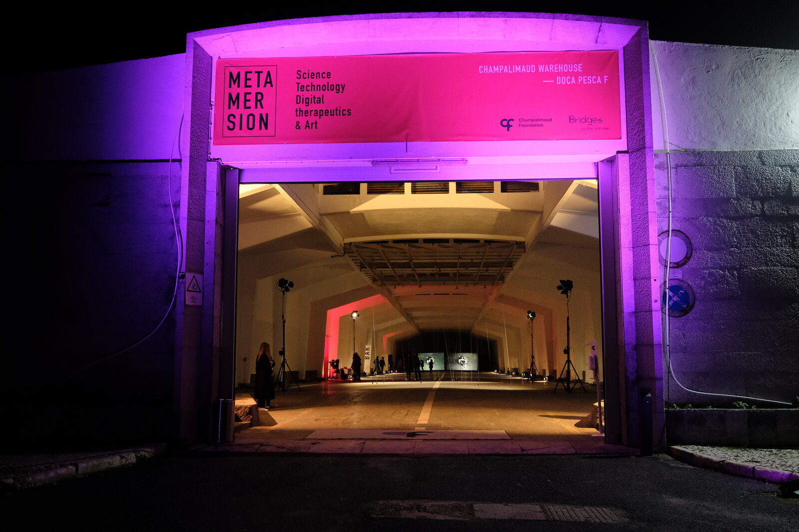
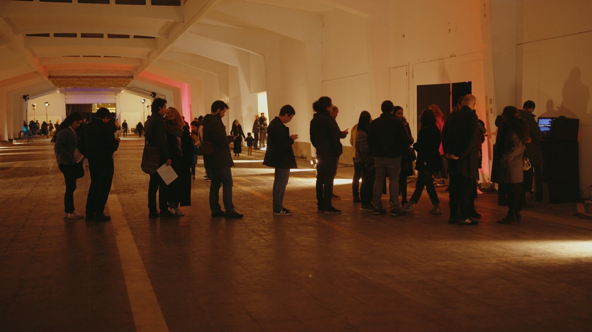
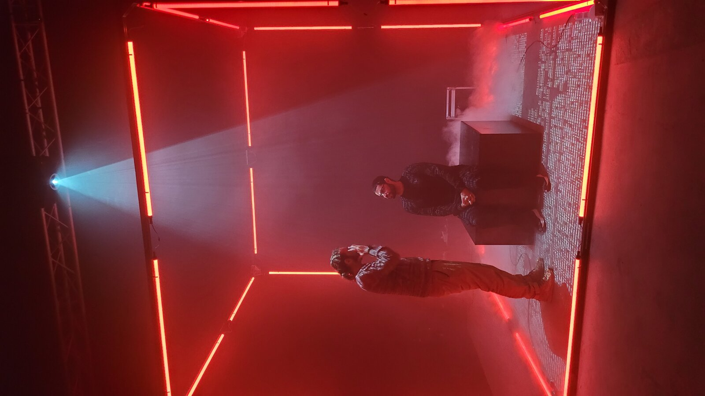